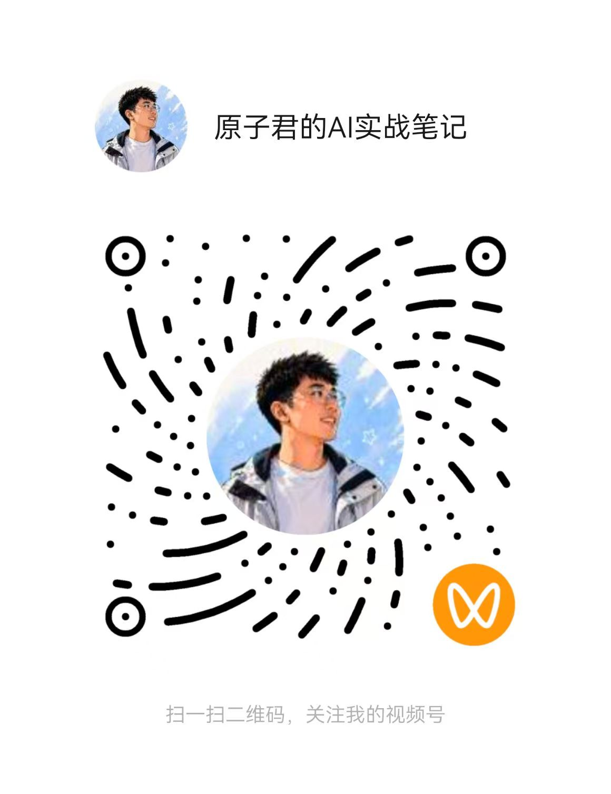

原子君 / Atom Wang
AI教育实践者 · 城乡规划教师
覆盖AI绘图、视频生成、编程开发、智能体搭建的全链路教学
AI教育实践者 · 城乡规划教师
覆盖AI绘图、视频生成、编程开发、智能体搭建的全链路教学
不是看教程学会的，是一门课一门课上出来的。5门课程融入AI技术，68名学生产出真实项目，从工具使用者到院级教改推动者——这条路是自己走通的路。
雅和设计工程学院城乡规划专业教师。2025秋至2026春，将AI融入5门课程教学，覆盖102课时，产出23组文旅宣传片、SU建模方案、3D漫游等真实成果。
从ChatGPT Image 2到CodeX编程，从AI生图到智能体搭建，覆盖AI全链路工具链。跑通闭环——不是演示，是真实教学场景中验证过的方法。
海南原子智能科技有限公司。AI培训/咨询 + 乡村文旅赋能。不靠一份工资活着——用十年城乡规划积淀 × AI工具链，搭建自己的事业版图。
从课堂到社区，从代码到内容——每一件都是亲自做出来的。

从教学材料改格式的痛点出发，上手CodeX。从TRAE、秒哒、Coze到Claude Code、Dify、RAGFlow——6个项目跑通AI编程全链路。
查看WaytoAGI分享 →16课时。天台花园AI出图→SU建模→3D漫游→AI短视频。把一张效果图变成可交互的沉浸式体验。
16课时。学生自采数据→3D建模→AI编程搭建网站→部署上线。从零到公开访问的完整链路。

原子君 / Atom Wang
雅和设计工程学院 · 城乡规划教师
海南原子智能科技有限公司
✉️ 合作联系：公众号后台留言
公众号：原子君的AI工作坊
视频号：原子君的AI实战笔记